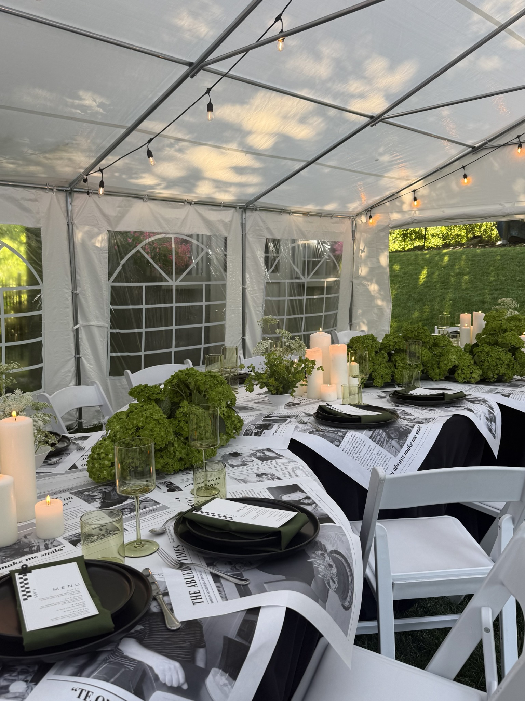

THE ART OF CELEBRATING BEAUTIFULLY
meets the occasion
Artfully composed florals for celebrations filled with beauty, character, and a touch of the unexpected
Let’s talk flowersA LOVE LETTER TO FLOWERS
Not just flowers
A feeling
Soft movement · Unexpected details · Colour that comes alive
We believe the most beautiful flowers feel like they belong to you. From a bouquet held close to a table shared with your favourite people, we bring a little of the garden to your celebration.
Find your floral directionGarden elegance, with a little whimsy
Thoughtfully imagined · Beautifully personalTHE PORTFOLIO / SELECTED STORIES
A few moments
in bloom
A collection of floral stories
Every detail, designed to feel like you
An intimate gathering, a grand celebration, a table overflowing with flowers. Explore the details and the stories behind each occasion
 That’s AmoreAriana & Amedeo
That’s AmoreAriana & Amedeo Celebrating PelusaAn 80th birthday celebration
Celebrating PelusaAn 80th birthday celebration
A Milestone in BloomCarlos’s 80th birthday A Blooming EasterA springtime celebration
A Blooming EasterA springtime celebration A FEATURED SEASONAL STORYSpring, UnscriptedAn Easter gatheringAn exuberant Easter tablescape in tangerine, butter yellow, blush and soft ivory — spontaneous, fresh, and full of lifeExplore the collection
A FEATURED SEASONAL STORYSpring, UnscriptedAn Easter gatheringAn exuberant Easter tablescape in tangerine, butter yellow, blush and soft ivory — spontaneous, fresh, and full of lifeExplore the collection OUR FLOWERS, YOUR OCCASION
Considered.
Personal,
Beautifully you
From intimate gatherings to large-scale installations and unforgettable celebrations, each floral design is thoughtfully composed around you.
Begin your floral story01Wedding flowers
From the bouquet you carry to the flowers that frame your celebration, we’ll create a considered floral direction around your style, setting, and priorities.
PERSONAL FLOWERS · CEREMONY · RECEPTION02Celebrations
Engagements, birthdays, showers, and gatherings deserve flowers that feel personal. A few beautiful details can make a room feel entirely your own.
ENGAGEMENTS · SHOWERS · MILESTONES03Something bespoke
For moments that call for something a little unexpected, we create custom floral details shaped around your vision, setting, and story.
YOUR IDEAS · A PERSONAL PROPOSAL04Installations & rentals
From statement-making floral installations to rental pieces that bring a setting together, we create designs that feel considered at every scale. We’ll discuss available rental options, your venue, and the setup required as part of your custom proposal.
LARGE-SCALE FLORALS · RENTAL PIECES · ON-SITE SETUPEvery proposal is personal. Your flowers, quantities, and agreed delivery or installation arrangements are tailored to your celebration.

Beautiful things have
A LITTLE INSPIRATION
Every celebration
has its own feeling
Start with a feeling. Explore a few directions, then let’s make something that’s yours.
Garden party
Peach, pink, and a joyful pop of colour. Abundant flowers with a playful, gathered feeling.

HELLO, I’M SOPHIA
A lifelong love
of beautiful things
It started with a little girl’s dream of delivering flowers in a bright pink truck
What began as a childhood fascination became a hands-on life in flowers. Today, I bring experience, curiosity, and a love for garden-inspired design to every arrangement.
For me, it begins with connection: your stories, the details you love, and how you want your celebration to feel. I’d love to hear what you’re imagining.
sophiaLet’s create something beautifulFROM AN IDEA TO IN BLOOM
A thoughtful process
A personal beginning
We’ll take it one beautiful step at a time.
Tell me your story
Your date, your setting, the details you love. We begin with a conversation about what matters to you.
Find your direction
We explore colours, priorities, and a bespoke floral proposal with a clear scope for your occasion.
Bring it into bloom
We confirm the details, flowers, and agreed delivery or installation arrangements for your celebration.
A FEW THINGS YOU MIGHT WONDER
Before we
begin
Where do you design flowers?
By Sophia Floral Design serves Toronto, the Greater Toronto Area, and beyond. Tell us where you’re celebrating so we can plan the floral design, delivery, and installation around your venue.
How much should I plan to spend?
Each proposal is tailored to your flowers, quantities, and service needs. Sharing a comfortable budget helps us focus on what matters most and explore a realistic design direction together.
Can I choose specific flowers?
Absolutely share your favourites. Flower availability changes with the season, so we’ll discuss options and suitable alternatives that preserve the colours and overall feeling you love.
Can you create large-scale installations and provide rentals?
Yes. Alongside bouquets and table arrangements, we design larger-scale floral installations and offer rental pieces to complement your event. Share your vision and venue details, and we’ll discuss available rental options, installation requirements, and how everything can come together in a tailored proposal.
Do you offer delivery and setup?
Absolutely. Delivery and professional installation are important parts of many of our floral proposals. We’ll plan the setup around your venue, timing, and design needs, and outline any delivery, installation, or removal services in your custom proposal.
How do I get started?
Share your celebration details below or contact Sophia directly. We’ll discuss your ideas and availability before developing a proposal. An enquiry alone does not reserve your event date.
SOMETHING BEAUTIFUL STARTS HERE
Let’s make
something
beautiful
A date, a feeling, a few favourite flowers.
Tell me what you’re imagining.